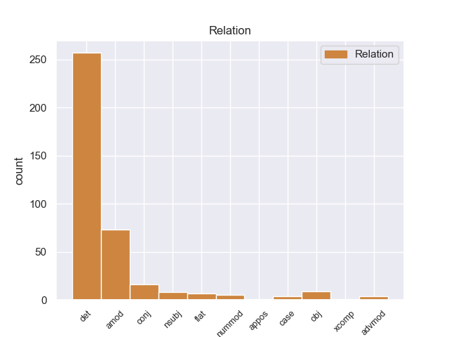
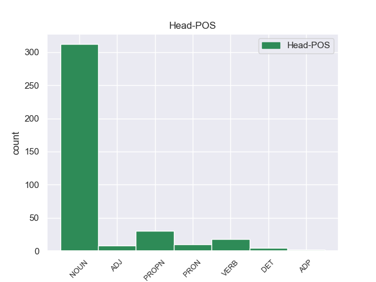
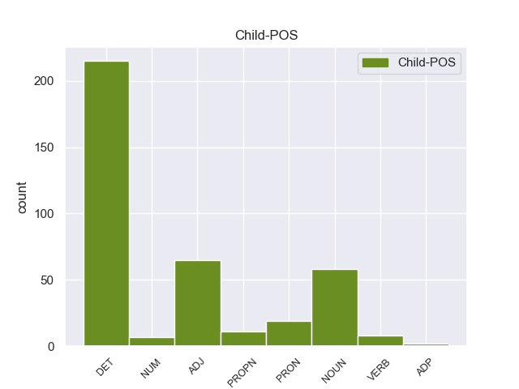

Distribution of features within this leaf



Agreement Rules sorted by frequency.
- When the dependent token is the determiner(det) of the head token,
1 Αυτό _ _ _ _ 0 _ _ _
2 μπορεί _ _ _ _ 0 _ _ _
3 να _ _ _ _ 0 _ _ _
4 μην _ _ _ _ 0 _ _ _
5 οδηγήσει _ _ _ _ 0 _ _ _
6 σ _ _ _ _ 0 _ _ _
7 τη _ _ _ _ 0 _ _ _
8 λήξη _ _ _ _ 0 _ _ _
9 του _ _ _ _ 0 _ _ _
10 εν _ _ _ _ 0 _ _ _
11 λόγω _ _ _ _ 0 _ _ _
12 ζητήματος _ _ _ _ 0 _ _ _
13 αλλά _ _ _ _ 0 _ _ _
14 , _ _ _ _ 0 _ _ _
15 σ _ _ _ _ 0 _ _ _
16 τη ο DET _ Case=Acc|Gender=Fem|Number=Sing 17 det _ _
17 μορφή μορφή VERB _ Case=Acc|Gender=Fem|Number=Sing 0 _ _ _
18 υπό _ _ _ _ 0 _ _ _
19 την _ _ _ _ 0 _ _ _
20 οποία _ _ _ _ 0 _ _ _
21 την _ _ _ _ 0 _ _ _
22 λάβαμε _ _ _ _ 0 _ _ _
23 , _ _ _ _ 0 _ _ _
24 αυτή _ _ _ _ 0 _ _ _
25 η _ _ _ _ 0 _ _ _
26 αίτηση _ _ _ _ 0 _ _ _
27 άρσης _ _ _ _ 0 _ _ _
28 της _ _ _ _ 0 _ _ _
29 ασυλίας _ _ _ _ 0 _ _ _
30 ήταν _ _ _ _ 0 _ _ _
31 , _ _ _ _ 0 _ _ _
32 κατά _ _ _ _ 0 _ _ _
33 την _ _ _ _ 0 _ _ _
34 άποψη _ _ _ _ 0 _ _ _
35 της _ _ _ _ 0 _ _ _
36 Επιτροπής _ _ _ _ 0 _ _ _
37 Νομικών _ _ _ _ 0 _ _ _
38 Θεμάτων _ _ _ _ 0 _ _ _
39 , _ _ _ _ 0 _ _ _
40 απαράδεκτη _ _ _ _ 0 _ _ _
41 , _ _ _ _ 0 _ _ _
42 άποψη _ _ _ _ 0 _ _ _
43 την _ _ _ _ 0 _ _ _
44 οποία _ _ _ _ 0 _ _ _
45 συνιστώ _ _ _ _ 0 _ _ _
46 σ _ _ _ _ 0 _ _ _
47 το _ _ _ _ 0 _ _ _
48 Σώμα _ _ _ _ 0 _ _ _
49 να _ _ _ _ 0 _ _ _
50 υιοθετήσει _ _ _ _ 0 _ _ _
51 . _ _ _ _ 0 _ _ _
1 Σ _ _ _ _ 0 _ _ _
2 τις _ _ _ _ 0 _ _ _
3 μεγάλες _ _ _ _ 0 _ _ _
4 πόλεις _ _ _ _ 0 _ _ _
5 κύρια _ _ _ _ 0 _ _ _
6 αιτία αιτίας NOUN _ Case=Acc|Gender=Fem|Number=Sing 0 _ _ _
7 είναι _ _ _ _ 0 _ _ _
8 η _ _ _ _ 0 _ _ _
9 απομόνωση _ _ _ _ 0 _ _ _
10 ενώ _ _ _ _ 0 _ _ _
11 σ _ _ _ _ 0 _ _ _
12 τις _ _ _ _ 0 _ _ _
13 μικρότερες _ _ _ _ 0 _ _ _
14 είναι _ _ _ _ 0 _ _ _
15 οι _ _ _ _ 0 _ _ _
16 αυστηροί αυστηρο NOUN _ Case=Acc|Gender=Fem|Number=Sing 6 amod _ _
17 κανόνες _ _ _ _ 0 _ _ _
18 » _ _ _ _ 0 _ _ _
19 . _ _ _ _ 0 _ _ _
1 Ο _ _ _ _ 0 _ _ _
2 δημοσιογράφος _ _ _ _ 0 _ _ _
3 , _ _ _ _ 0 _ _ _
4 ο _ _ _ _ 0 _ _ _
5 οποίος _ _ _ _ 0 _ _ _
6 έγραφε έγραφε VERB _ Case=Acc|Gender=Fem|Number=Sing 0 _ _ _
7 τις _ _ _ _ 0 _ _ _
8 ομιλίες _ _ _ _ 0 _ _ _
9 του _ _ _ _ 0 _ _ _
10 Χάουμε _ _ _ _ 0 _ _ _
11 Μάτας _ _ _ _ 0 _ _ _
12 και _ _ _ _ 0 _ _ _
13 έπλεκε _ _ _ _ 0 _ _ _
14 το _ _ _ _ 0 _ _ _
15 εγκώμιο _ _ _ _ 0 _ _ _
16 του _ _ _ _ 0 _ _ _
17 τελευταίου _ _ _ _ 0 _ _ _
18 , _ _ _ _ 0 _ _ _
19 καταδικάστηκε _ _ _ _ 0 _ _ _
20 σε _ _ _ _ 0 _ _ _
21 κάθειρξη _ _ _ _ 0 _ _ _
22 τριών _ _ _ _ 0 _ _ _
23 ετών _ _ _ _ 0 _ _ _
24 και _ _ _ _ 0 _ _ _
25 εννέα εννέα VERB _ Case=Acc|Gender=Fem|Number=Sing 6 conj _ _
26 μηνών _ _ _ _ 0 _ _ _
27 . _ _ _ _ 0 _ _ _
1 Εξαιτίας _ _ _ _ 0 _ _ _
2 του _ _ _ _ 0 _ _ _
3 δυστυχήματος _ _ _ _ 0 _ _ _
4 σε _ _ _ _ 0 _ _ _
5 τούνελ _ _ _ _ 0 _ _ _
6 της _ _ _ _ 0 _ _ _
7 Ελβετίας _ _ _ _ 0 _ _ _
8 , _ _ _ _ 0 _ _ _
9 σ _ _ _ _ 0 _ _ _
10 το _ _ _ _ 0 _ _ _
11 καντόνι _ _ _ _ 0 _ _ _
12 του _ _ _ _ 0 _ _ _
13 Wallis _ _ _ _ 0 _ _ _
14 , _ _ _ _ 0 _ _ _
15 τη _ _ _ _ 0 _ _ _
16 ζωή ζωή VERB _ Case=Acc|Gender=Fem|Number=Sing 18 obj _ _
17 τους _ _ _ _ 0 _ _ _
18 έχασαν έχασαν VERB _ Case=Acc|Gender=Fem|Number=Sing 0 _ _ _
19 οι _ _ _ _ 0 _ _ _
20 δύο _ _ _ _ 0 _ _ _
21 οδηγοί _ _ _ _ 0 _ _ _
22 , _ _ _ _ 0 _ _ _
23 22 _ _ _ _ 0 _ _ _
24 παιδιά _ _ _ _ 0 _ _ _
25 και _ _ _ _ 0 _ _ _
26 τέσσερις _ _ _ _ 0 _ _ _
27 συνοδοί _ _ _ _ 0 _ _ _
28 , _ _ _ _ 0 _ _ _
29 ενώ _ _ _ _ 0 _ _ _
30 επίσης _ _ _ _ 0 _ _ _
31 τραυματίστηκαν _ _ _ _ 0 _ _ _
32 άλλα _ _ _ _ 0 _ _ _
33 24 _ _ _ _ 0 _ _ _
34 άτομα _ _ _ _ 0 _ _ _
35 . _ _ _ _ 0 _ _ _
1 Εξαιτίας _ _ _ _ 0 _ _ _
2 του _ _ _ _ 0 _ _ _
3 δυστυχήματος δυστυχήματός NOUN _ Case=Acc|Gender=Fem|Number=Sing 18 nsubj _ _
4 σε _ _ _ _ 0 _ _ _
5 τούνελ _ _ _ _ 0 _ _ _
6 της _ _ _ _ 0 _ _ _
7 Ελβετίας _ _ _ _ 0 _ _ _
8 , _ _ _ _ 0 _ _ _
9 σ _ _ _ _ 0 _ _ _
10 το _ _ _ _ 0 _ _ _
11 καντόνι _ _ _ _ 0 _ _ _
12 του _ _ _ _ 0 _ _ _
13 Wallis _ _ _ _ 0 _ _ _
14 , _ _ _ _ 0 _ _ _
15 τη _ _ _ _ 0 _ _ _
16 ζωή _ _ _ _ 0 _ _ _
17 τους _ _ _ _ 0 _ _ _
18 έχασαν έχασαν VERB _ Case=Acc|Gender=Fem|Number=Sing 0 _ _ _
19 οι _ _ _ _ 0 _ _ _
20 δύο _ _ _ _ 0 _ _ _
21 οδηγοί _ _ _ _ 0 _ _ _
22 , _ _ _ _ 0 _ _ _
23 22 _ _ _ _ 0 _ _ _
24 παιδιά _ _ _ _ 0 _ _ _
25 και _ _ _ _ 0 _ _ _
26 τέσσερις _ _ _ _ 0 _ _ _
27 συνοδοί _ _ _ _ 0 _ _ _
28 , _ _ _ _ 0 _ _ _
29 ενώ _ _ _ _ 0 _ _ _
30 επίσης _ _ _ _ 0 _ _ _
31 τραυματίστηκαν _ _ _ _ 0 _ _ _
32 άλλα _ _ _ _ 0 _ _ _
33 24 _ _ _ _ 0 _ _ _
34 άτομα _ _ _ _ 0 _ _ _
35 . _ _ _ _ 0 _ _ _
1 Ο _ _ _ _ 0 _ _ _
2 Έντουαρντ Έντουαρντ PROPN PROPN Case=Nom|Gender=Masc|Number=Sing 0 _ _ _
3 Σνόουντεν Σνόουντεν PROPN PROPN Case=Nom|Gender=Masc|Number=Sing 2 flat _ SpaceAfter=No
4 , _ _ _ _ 0 _ _ _
5 που _ _ _ _ 0 _ _ _
6 παραμένει _ _ _ _ 0 _ _ _
7 επί _ _ _ _ 0 _ _ _
8 τρεις _ _ _ _ 0 _ _ _
9 εβδομάδες _ _ _ _ 0 _ _ _
10 σ _ _ _ _ 0 _ _ _
11 την _ _ _ _ 0 _ _ _
12 αίθουσα _ _ _ _ 0 _ _ _
13 μετεπιβιβάσεων _ _ _ _ 0 _ _ _
14 του _ _ _ _ 0 _ _ _
15 αεροδρομίου _ _ _ _ 0 _ _ _
16 Σερεμέτιεβο _ _ _ _ 0 _ _ _
17 της _ _ _ _ 0 _ _ _
18 Μόσχας _ _ _ _ 0 _ _ _
19 , _ _ _ _ 0 _ _ _
20 είχε _ _ _ _ 0 _ _ _
21 ξαναζητήσει _ _ _ _ 0 _ _ _
22 άσυλο _ _ _ _ 0 _ _ _
23 απ’ _ _ _ _ 0 _ _ _
24 τη _ _ _ _ 0 _ _ _
25 Ρωσία _ _ _ _ 0 _ _ _
26 , _ _ _ _ 0 _ _ _
27 αλλά _ _ _ _ 0 _ _ _
28 απέσυρε _ _ _ _ 0 _ _ _
29 τότε _ _ _ _ 0 _ _ _
30 το _ _ _ _ 0 _ _ _
31 αίτημα _ _ _ _ 0 _ _ _
32 όταν _ _ _ _ 0 _ _ _
33 ο _ _ _ _ 0 _ _ _
34 κ. _ _ _ _ 0 _ _ _
35 Πούτιν _ _ _ _ 0 _ _ _
36 είχε _ _ _ _ 0 _ _ _
37 δηλώσει _ _ _ _ 0 _ _ _
38 ότι _ _ _ _ 0 _ _ _
39 για _ _ _ _ 0 _ _ _
40 να _ _ _ _ 0 _ _ _
41 του _ _ _ _ 0 _ _ _
42 δοθεί _ _ _ _ 0 _ _ _
43 άσυλο _ _ _ _ 0 _ _ _
44 θα _ _ _ _ 0 _ _ _
45 πρέπει _ _ _ _ 0 _ _ _
46 να _ _ _ _ 0 _ _ _
47 σταματήσει _ _ _ _ 0 _ _ _
48 να _ _ _ _ 0 _ _ _
49 διαρρέει _ _ _ _ 0 _ _ _
50 άλλες _ _ _ _ 0 _ _ _
51 λεπτομέρειες _ _ _ _ 0 _ _ _
52 για _ _ _ _ 0 _ _ _
53 τα _ _ _ _ 0 _ _ _
54 απόρρητα _ _ _ _ 0 _ _ _
55 προγράμματα _ _ _ _ 0 _ _ _
56 των _ _ _ _ 0 _ _ _
57 ΗΠΑ _ _ _ _ 0 _ _ _
58 . _ _ _ _ 0 _ _ _
1 Εδώ _ _ _ _ 0 _ _ _
2 και _ _ _ _ 0 _ _ _
3 ενάμισι ενάμισης NUM NUM Case=Acc|Gender=Masc|Number=Sing|NumType=Card 4 nummod _ _
4 χρόνο χρόνος NOUN NOUN Case=Acc|Gender=Masc|Number=Sing 0 _ _ _
5 επισημαίνω _ _ _ _ 0 _ _ _
6 εδώ _ _ _ _ 0 _ _ _
7 σ _ _ _ _ 0 _ _ _
8 το _ _ _ _ 0 _ _ _
9 Κοινοβούλιο _ _ _ _ 0 _ _ _
10 ότι _ _ _ _ 0 _ _ _
11 δεν _ _ _ _ 0 _ _ _
12 μπορούμε _ _ _ _ 0 _ _ _
13 πια _ _ _ _ 0 _ _ _
14 να _ _ _ _ 0 _ _ _
15 χρησιμοποιούμε _ _ _ _ 0 _ _ _
16 την _ _ _ _ 0 _ _ _
17 έκφραση _ _ _ _ 0 _ _ _
18 ειρηνευτικές _ _ _ _ 0 _ _ _
19 διαδικασίες _ _ _ _ 0 _ _ _
20 σε _ _ _ _ 0 _ _ _
21 αυτά _ _ _ _ 0 _ _ _
22 τα _ _ _ _ 0 _ _ _
23 συμφραζόμενα _ _ _ _ 0 _ _ _
24 . _ _ _ _ 0 _ _ _
1 Η _ _ _ _ 0 _ _ _
2 Μπενφίκα _ _ _ _ 0 _ _ _
3 ήταν _ _ _ _ 0 _ _ _
4 πιο πιο NOUN _ Case=Acc|Gender=Fem|Number=Sing 22 case _ _
5 επιθετική _ _ _ _ 0 _ _ _
6 και _ _ _ _ 0 _ _ _
7 καλύτερη _ _ _ _ 0 _ _ _
8 σ _ _ _ _ 0 _ _ _
9 το _ _ _ _ 0 _ _ _
10 πρώτο _ _ _ _ 0 _ _ _
11 ημίχρονο _ _ _ _ 0 _ _ _
12 , _ _ _ _ 0 _ _ _
13 με _ _ _ _ 0 _ _ _
14 αποτέλεσμα _ _ _ _ 0 _ _ _
15 να _ _ _ _ 0 _ _ _
16 ανοίξει _ _ _ _ 0 _ _ _
17 το _ _ _ _ 0 _ _ _
18 σκορ _ _ _ _ 0 _ _ _
19 σ _ _ _ _ 0 _ _ _
20 το _ _ _ _ 0 _ _ _
21 πρώτο _ _ _ _ 0 _ _ _
22 λεπτό λεπτό NOUN _ Case=Acc|Gender=Fem|Number=Sing 0 _ _ _
23 των _ _ _ _ 0 _ _ _
24 καθυστερήσεων _ _ _ _ 0 _ _ _
25 , _ _ _ _ 0 _ _ _
26 χάρη _ _ _ _ 0 _ _ _
27 σ _ _ _ _ 0 _ _ _
28 τον _ _ _ _ 0 _ _ _
29 Μάξι _ _ _ _ 0 _ _ _
30 Περέιρα _ _ _ _ 0 _ _ _
31 . _ _ _ _ 0 _ _ _
1 Ο _ _ _ _ 0 _ _ _
2 Χάουμε _ _ _ _ 0 _ _ _
3 Μάτας _ _ _ _ 0 _ _ _
4 είχε _ _ _ _ 0 _ _ _
5 λάβει _ _ _ _ 0 _ _ _
6 παρανόμως _ _ _ _ 0 _ _ _
7 500.000 _ _ _ _ 0 _ _ _
8 ευρώ _ _ _ _ 0 _ _ _
9 ( _ _ _ _ 0 _ _ _
10 δημόσια _ _ _ _ 0 _ _ _
11 χρήματα _ _ _ _ 0 _ _ _
12 ) _ _ _ _ 0 _ _ _
13 , _ _ _ _ 0 _ _ _
14 για _ _ _ _ 0 _ _ _
15 να _ _ _ _ 0 _ _ _
16 πληρώσει _ _ _ _ 0 _ _ _
17 δημοσιογράφο _ _ _ _ 0 _ _ _
18 που _ _ _ _ 0 _ _ _
19 έγραφε έγραφε VERB _ Case=Acc|Gender=Fem|Number=Sing 0 _ _ _
20 τις _ _ _ _ 0 _ _ _
21 ομιλίες ομιλίες NOUN _ Case=Acc|Gender=Fem|Number=Sing 19 advmod _ _
22 του _ _ _ _ 0 _ _ _
23 . _ _ _ _ 0 _ _ _
1 Ο _ _ _ _ 0 _ _ _
2 πρώην _ _ _ _ 0 _ _ _
3 συμβασιούχος συμβασιούχος NOUN NOUN Case=Nom|Gender=Masc|Number=Sing 0 _ _ _
4 της _ _ _ _ 0 _ _ _
5 αμερικανικής _ _ _ _ 0 _ _ _
6 Υπηρεσίας _ _ _ _ 0 _ _ _
7 Εθνικής _ _ _ _ 0 _ _ _
8 Ασφάλειας _ _ _ _ 0 _ _ _
9 , _ _ _ _ 0 _ _ _
10 Έντουαρντ Έντουαρντ PROPN PROPN Case=Nom|Gender=Masc|Number=Sing 3 appos _ _
11 Σνόουντεν _ _ _ _ 0 _ _ _
12 , _ _ _ _ 0 _ _ _
13 επιδιώκει _ _ _ _ 0 _ _ _
14 προσωρινό _ _ _ _ 0 _ _ _
15 άσυλο _ _ _ _ 0 _ _ _
16 σ _ _ _ _ 0 _ _ _
17 τη _ _ _ _ 0 _ _ _
18 Ρωσία _ _ _ _ 0 _ _ _
19 , _ _ _ _ 0 _ _ _
20 έως _ _ _ _ 0 _ _ _
21 ότου _ _ _ _ 0 _ _ _
22 μπορέσει _ _ _ _ 0 _ _ _
23 να _ _ _ _ 0 _ _ _
24 ταξιδέψει _ _ _ _ 0 _ _ _
25 σ _ _ _ _ 0 _ _ _
26 τη _ _ _ _ 0 _ _ _
27 Λατινική _ _ _ _ 0 _ _ _
28 Αμερική _ _ _ _ 0 _ _ _
29 και _ _ _ _ 0 _ _ _
30 το _ _ _ _ 0 _ _ _
31 Κρεμλίνο _ _ _ _ 0 _ _ _
32 έχει _ _ _ _ 0 _ _ _
33 αφήσει _ _ _ _ 0 _ _ _
34 να _ _ _ _ 0 _ _ _
35 εννοηθεί _ _ _ _ 0 _ _ _
36 ότι _ _ _ _ 0 _ _ _
37 ενδεχομένως _ _ _ _ 0 _ _ _
38 να _ _ _ _ 0 _ _ _
39 του _ _ _ _ 0 _ _ _
40 επιτρέψει _ _ _ _ 0 _ _ _
41 να _ _ _ _ 0 _ _ _
42 παραμείνει _ _ _ _ 0 _ _ _
43 σ _ _ _ _ 0 _ _ _
44 τη _ _ _ _ 0 _ _ _
45 χώρα _ _ _ _ 0 _ _ _
46 , _ _ _ _ 0 _ _ _
47 αν _ _ _ _ 0 _ _ _
48 σταματήσει _ _ _ _ 0 _ _ _
49 να _ _ _ _ 0 _ _ _
50 διαρρέει _ _ _ _ 0 _ _ _
51 πληροφορίες _ _ _ _ 0 _ _ _
52 για _ _ _ _ 0 _ _ _
53 τα _ _ _ _ 0 _ _ _
54 απόρρητα _ _ _ _ 0 _ _ _
55 προγράμματα _ _ _ _ 0 _ _ _
56 των _ _ _ _ 0 _ _ _
57 ΗΠΑ _ _ _ _ 0 _ _ _
58 . _ _ _ _ 0 _ _ _
1 Ωστόσο _ _ _ _ 0 _ _ _
2 , _ _ _ _ 0 _ _ _
3 το _ _ _ _ 0 _ _ _
4 τουρκικό _ _ _ _ 0 _ _ _
5 κοινοβούλιο _ _ _ _ 0 _ _ _
6 δεν _ _ _ _ 0 _ _ _
7 έθιξε έθιξε VERB _ Case=Acc|Gender=Fem|Number=Sing 0 _ _ _
8 τη _ _ _ _ 0 _ _ _
9 νομική _ _ _ _ 0 _ _ _
10 βάση _ _ _ _ 0 _ _ _
11 για _ _ _ _ 0 _ _ _
12 την _ _ _ _ 0 _ _ _
13 απαγόρευση απαγόρευση VERB _ Case=Acc|Gender=Fem|Number=Sing 7 xcomp _ _
14 πολιτικών _ _ _ _ 0 _ _ _
15 κομμάτων _ _ _ _ 0 _ _ _
16 . _ _ _ _ 0 _ _ _
Disagree Examples:
1 Σε _ _ _ _ 0 _ _ _
2 ομιλία _ _ _ _ 0 _ _ _
3 του _ _ _ _ 0 _ _ _
4 σ _ _ _ _ 0 _ _ _
5 το _ _ _ _ 0 _ _ _
6 Λευκό _ _ _ _ 0 _ _ _
7 Οίκο _ _ _ _ 0 _ _ _
8 , _ _ _ _ 0 _ _ _
9 ο _ _ _ _ 0 _ _ _
10 πρόεδρος _ _ _ _ 0 _ _ _
11 Ομπάμα _ _ _ _ 0 _ _ _
12 δήλωσε _ _ _ _ 0 _ _ _
13 ότι _ _ _ _ 0 _ _ _
14 ο _ _ _ _ 0 _ _ _
15 εγκέφαλος _ _ _ _ 0 _ _ _
16 παραμένει _ _ _ _ 0 _ _ _
17 επιστημονικό _ _ _ _ 0 _ _ _
18 μυστήριο _ _ _ _ 0 _ _ _
19 , _ _ _ _ 0 _ _ _
20 παρά _ _ _ _ 0 _ _ _
21 το _ _ _ _ 0 _ _ _
22 γεγονός _ _ _ _ 0 _ _ _
23 ότι _ _ _ _ 0 _ _ _
24 ο _ _ _ _ 0 _ _ _
25 ίδιος _ _ _ _ 0 _ _ _
26 ο _ _ _ _ 0 _ _ _
27 άνθρωπος _ _ _ _ 0 _ _ _
28 έχει _ _ _ _ 0 _ _ _
29 κατορθώσει _ _ _ _ 0 _ _ _
30 να _ _ _ _ 0 _ _ _
31 λύσει _ _ _ _ 0 _ _ _
32 τα _ _ _ _ 0 _ _ _
33 μυστήρια μυστήριος ADJ ADJ Case=Acc|Gender=Neut|Number=Plur 0 _ _ _
34 του _ _ _ _ 0 _ _ _
35 σύμπαντος σύμπαν ADJ ADJ Case=Gen|Gender=Masc|Number=Sing 33 amod _ SpaceAfter=No
36 . _ _ _ _ 0 _ _ _
1 Τις _ _ _ _ 0 _ _ _
2 καταθέσεις _ _ _ _ 0 _ _ _
3 , _ _ _ _ 0 _ _ _
4 σ _ _ _ _ 0 _ _ _
5 τις _ _ _ _ 0 _ _ _
6 οποίες _ _ _ _ 0 _ _ _
7 δεν _ _ _ _ 0 _ _ _
8 έχει _ _ _ _ 0 _ _ _
9 γίνει _ _ _ _ 0 _ _ _
10 καμία _ _ _ _ 0 _ _ _
11 κίνηση _ _ _ _ 0 _ _ _
12 του _ _ _ _ 0 _ _ _
13 λογαριασμού _ _ _ _ 0 _ _ _
14 για _ _ _ _ 0 _ _ _
15 20 _ _ _ _ 0 _ _ _
16 χρόνια _ _ _ _ 0 _ _ _
17 έχει _ _ _ _ 0 _ _ _
18 βάλει _ _ _ _ 0 _ _ _
19 σ _ _ _ _ 0 _ _ _
20 το _ _ _ _ 0 _ _ _
21 στόχαστρο _ _ _ _ 0 _ _ _
22 το _ _ _ _ 0 _ _ _
23 Υπουργείο _ _ _ _ 0 _ _ _
24 Οικονομικών _ _ _ _ 0 _ _ _
25 , _ _ _ _ 0 _ _ _
26 καθώς _ _ _ _ 0 _ _ _
27 μάλιστα _ _ _ _ 0 _ _ _
28 σύμφωνα _ _ _ _ 0 _ _ _
29 με _ _ _ _ 0 _ _ _
30 εκτιμήσεις _ _ _ _ 0 _ _ _
31 τραπεζικών _ _ _ _ 0 _ _ _
32 στελεχών _ _ _ _ 0 _ _ _
33 φθάνουν _ _ _ _ 0 _ _ _
34 το _ _ _ _ 0 _ _ _
35 ποσό _ _ _ _ 0 _ _ _
36 των ο DET DET Case=Gen|Definite=Def|Gender=Neut|Number=Plur|PronType=Art 39 det _ _
37 3 _ _ _ _ 0 _ _ _
38 δισεκατομμυρίων _ _ _ _ 0 _ _ _
39 ευρώ ευρώ NOUN NOUN Case=Acc|Gender=Neut|Number=Sing 0 _ _ _
40 . _ _ _ _ 0 _ _ _
1 Ο _ _ _ _ 0 _ _ _
2 ΙΣΑ _ _ _ _ 0 _ _ _
3 τονίζει _ _ _ _ 0 _ _ _
4 ότι _ _ _ _ 0 _ _ _
5 παρά _ _ _ _ 0 _ _ _
6 το _ _ _ _ 0 _ _ _
7 γεγονός _ _ _ _ 0 _ _ _
8 ότι _ _ _ _ 0 _ _ _
9 είχε _ _ _ _ 0 _ _ _
10 προειδοποιήσει _ _ _ _ 0 _ _ _
11 για _ _ _ _ 0 _ _ _
12 την _ _ _ _ 0 _ _ _
13 επερχόμενη _ _ _ _ 0 _ _ _
14 επιδημία _ _ _ _ 0 _ _ _
15 , _ _ _ _ 0 _ _ _
16 ο _ _ _ _ 0 _ _ _
17 πληθυσμός _ _ _ _ 0 _ _ _
18 έμεινε _ _ _ _ 0 _ _ _
19 ακάλυπτος _ _ _ _ 0 _ _ _
20 , _ _ _ _ 0 _ _ _
21 επισημαίνοντας _ _ _ _ 0 _ _ _
22 χαρακτηριστικά _ _ _ _ 0 _ _ _
23 ότι _ _ _ _ 0 _ _ _
24 " _ _ _ _ 0 _ _ _
25 για _ _ _ _ 0 _ _ _
26 ένα _ _ _ _ 0 _ _ _
27 εμβόλιο _ _ _ _ 0 _ _ _
28 των ο DET DET Case=Gen|Definite=Def|Gender=Neut|Number=Plur|PronType=Art 30 det _ _
29 6 _ _ _ _ 0 _ _ _
30 ευρώ ευρώ NOUN NOUN Case=Acc|Gender=Neut|Number=Sing 0 _ _ _
31 πεθαίνουν _ _ _ _ 0 _ _ _
32 άνθρωποι _ _ _ _ 0 _ _ _
33 " _ _ _ _ 0 _ _ _
34 . _ _ _ _ 0 _ _ _
1 Ο _ _ _ _ 0 _ _ _
2 Έντουαρντ _ _ _ _ 0 _ _ _
3 Σνόουντεν _ _ _ _ 0 _ _ _
4 , _ _ _ _ 0 _ _ _
5 που _ _ _ _ 0 _ _ _
6 παραμένει _ _ _ _ 0 _ _ _
7 επί _ _ _ _ 0 _ _ _
8 τρεις _ _ _ _ 0 _ _ _
9 εβδομάδες _ _ _ _ 0 _ _ _
10 σ _ _ _ _ 0 _ _ _
11 την _ _ _ _ 0 _ _ _
12 αίθουσα _ _ _ _ 0 _ _ _
13 μετεπιβιβάσεων _ _ _ _ 0 _ _ _
14 του _ _ _ _ 0 _ _ _
15 αεροδρομίου αεροδρόμιο NOUN NOUN Case=Gen|Gender=Neut|Number=Sing 0 _ _ _
16 Σερεμέτιεβο Σερεμέτιεβο PROPN PROPN Case=Nom|Gender=Neut|Number=Sing 15 flat _ _
17 της _ _ _ _ 0 _ _ _
18 Μόσχας _ _ _ _ 0 _ _ _
19 , _ _ _ _ 0 _ _ _
20 είχε _ _ _ _ 0 _ _ _
21 ξαναζητήσει _ _ _ _ 0 _ _ _
22 άσυλο _ _ _ _ 0 _ _ _
23 απ’ _ _ _ _ 0 _ _ _
24 τη _ _ _ _ 0 _ _ _
25 Ρωσία _ _ _ _ 0 _ _ _
26 , _ _ _ _ 0 _ _ _
27 αλλά _ _ _ _ 0 _ _ _
28 απέσυρε _ _ _ _ 0 _ _ _
29 τότε _ _ _ _ 0 _ _ _
30 το _ _ _ _ 0 _ _ _
31 αίτημα _ _ _ _ 0 _ _ _
32 όταν _ _ _ _ 0 _ _ _
33 ο _ _ _ _ 0 _ _ _
34 κ. _ _ _ _ 0 _ _ _
35 Πούτιν _ _ _ _ 0 _ _ _
36 είχε _ _ _ _ 0 _ _ _
37 δηλώσει _ _ _ _ 0 _ _ _
38 ότι _ _ _ _ 0 _ _ _
39 για _ _ _ _ 0 _ _ _
40 να _ _ _ _ 0 _ _ _
41 του _ _ _ _ 0 _ _ _
42 δοθεί _ _ _ _ 0 _ _ _
43 άσυλο _ _ _ _ 0 _ _ _
44 θα _ _ _ _ 0 _ _ _
45 πρέπει _ _ _ _ 0 _ _ _
46 να _ _ _ _ 0 _ _ _
47 σταματήσει _ _ _ _ 0 _ _ _
48 να _ _ _ _ 0 _ _ _
49 διαρρέει _ _ _ _ 0 _ _ _
50 άλλες _ _ _ _ 0 _ _ _
51 λεπτομέρειες _ _ _ _ 0 _ _ _
52 για _ _ _ _ 0 _ _ _
53 τα _ _ _ _ 0 _ _ _
54 απόρρητα _ _ _ _ 0 _ _ _
55 προγράμματα _ _ _ _ 0 _ _ _
56 των _ _ _ _ 0 _ _ _
57 ΗΠΑ _ _ _ _ 0 _ _ _
58 . _ _ _ _ 0 _ _ _
1 Τελειώνοντας _ _ _ _ 0 _ _ _
2 θα _ _ _ _ 0 _ _ _
3 ήθελα _ _ _ _ 0 _ _ _
4 να _ _ _ _ 0 _ _ _
5 πω _ _ _ _ 0 _ _ _
6 ότι _ _ _ _ 0 _ _ _
7 το _ _ _ _ 0 _ _ _
8 όλο _ _ _ _ 0 _ _ _
9 ζήτημα _ _ _ _ 0 _ _ _
10 θα _ _ _ _ 0 _ _ _
11 μπορούσε _ _ _ _ 0 _ _ _
12 να _ _ _ _ 0 _ _ _
13 αποτελέσει _ _ _ _ 0 _ _ _
14 μία _ _ _ _ 0 _ _ _
15 ενότητα _ _ _ _ 0 _ _ _
16 εάν _ _ _ _ 0 _ _ _
17 αύριο _ _ _ _ 0 _ _ _
18 αποκτούσαμε _ _ _ _ 0 _ _ _
19 ένα _ _ _ _ 0 _ _ _
20 ενιαίο _ _ _ _ 0 _ _ _
21 πιστοποιητικό _ _ _ _ 0 _ _ _
22 επαγγελματικής _ _ _ _ 0 _ _ _
23 ικανότητας _ _ _ _ 0 _ _ _
24 οδηγού _ _ _ _ 0 _ _ _
25 , _ _ _ _ 0 _ _ _
26 μία _ _ _ _ 0 _ _ _
27 οδηγία _ _ _ _ 0 _ _ _
28 για _ _ _ _ 0 _ _ _
29 τους _ _ _ _ 0 _ _ _
30 χρόνους χρόνου DET _ Case=Nom|Definite=Def|Gender=Fem|Number=Sing|PronType=Art 41 det _ _
31 οδήγησης _ _ _ _ 0 _ _ _
32 και _ _ _ _ 0 _ _ _
33 ανάπαυσης _ _ _ _ 0 _ _ _
34 , _ _ _ _ 0 _ _ _
35 μία _ _ _ _ 0 _ _ _
36 ανάλογη _ _ _ _ 0 _ _ _
37 κάρτα _ _ _ _ 0 _ _ _
38 που _ _ _ _ 0 _ _ _
39 θα _ _ _ _ 0 _ _ _
40 το _ _ _ _ 0 _ _ _
41 αποδεικνύει αποδεικνύει VERB _ Case=Acc|Gender=Fem|Number=Sing 0 _ _ _
42 , _ _ _ _ 0 _ _ _
43 καθώς _ _ _ _ 0 _ _ _
44 και _ _ _ _ 0 _ _ _
45 αυτήν _ _ _ _ 0 _ _ _
46 την _ _ _ _ 0 _ _ _
47 οδηγία _ _ _ _ 0 _ _ _
48 για _ _ _ _ 0 _ _ _
49 την _ _ _ _ 0 _ _ _
50 άδεια _ _ _ _ 0 _ _ _
51 οδήγησης _ _ _ _ 0 _ _ _
52 και _ _ _ _ 0 _ _ _
53 την _ _ _ _ 0 _ _ _
54 κατάρτιση _ _ _ _ 0 _ _ _
55 που _ _ _ _ 0 _ _ _
56 συζητούμε _ _ _ _ 0 _ _ _
57 σήμερα _ _ _ _ 0 _ _ _
58 . _ _ _ _ 0 _ _ _